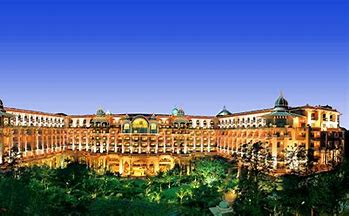

India is renowned for its vibrant and diverse culinary scene, offering a wide array of hotels and restaurants that cater to various tastes and budgets.
From luxurious five-star hotels to humble street food stalls, India has something for everyone. In major cities like Mumbai, Delhi, and Bangalore, you'll find a plethora of high-end hotels that showcase opulent decor,
world-class amenities, and Michelin-starred restaurants, serving both traditional Indian cuisine and international delicacies. These hotels are known for their impeccable service, attention to detail, and a seamless blend
of modern comforts with traditional Indian hospitality
On the other hand, India is also famous for its street food culture, where small, local eateries and food stalls offer an explosion of flavors and aromas.
These budget-friendly options allow visitors to sample a wide range of regional cuisines, such as chaat (savory snacks), dosas (South Indian pancakes), kebabs, and various street-style curries.
These establishments often provide a glimpse into the authentic culinary traditions of different regions in India and are a favorite among locals and tourists alike. Whether you're looking for a luxurious dining experience
or a culinary adventure on the streets, Indian hotels and restaurants cater to a diverse range of tastes and provide a memorable dining experience.
Taj Mahal Palace

The Taj Mahal Palace is an architectural masterpiece and a symbol of timeless beauty located in the city of Agra, India
Constructed in the 17th century by the Mughal emperor Shah Jahan as a mausoleum for his beloved wife Mumtaz Mahal, this grand structure stands as a testament to their eternal love
. The Taj Mahal Palace showcases intricate marble carvings, graceful domes, and mesmerizing gardens, all harmoniously blending Persian, Islamic, and Indian architectural styles.
Its sheer magnificence, exquisite detailing, and the ethereal glow it emanates during sunrise and sunset make it one of the most revered and iconic landmarks in the world, attracting millions of visitors each year.
Estimated Price:999-29999/-
The Leela Palaces

The Leela Palace is an iconic luxury hotel known for its grandeur and impeccable hospitality.
Located in prestigious destinations around the world, each Leela Palace exudes elegance and offers a distinctive blend of traditional architecture and modern amenities.
From the moment guests step into the opulent lobby adorned with exquisite artwork and intricate detailing, they are transported into a realm of unmatched luxury.
The Leela Palace provides an oasis of tranquility and indulgence, offering world-class accommodations, fine dining experiences featuring global cuisines, rejuvenating spa facilities,
and personalized services that cater to the discerning needs of its guests. With its unwavering commitment to excellence,
the Leela Palace sets a benchmark for luxury hospitality, ensuring an unforgettable stay for those seeking a truly regal experience.
Estimated Price:999-19999/-
The Rambagh Palace
The Rambagh Palace, located in Jaipur, India, is a magnificent architectural marvel that exudes opulence and grandeur.
Originally built as a royal residence in the 19th century, it was later converted into a luxurious heritage hotel. With its sprawling gardens, intricate marble work,
and regal façade, the palace offers a glimpse into the bygone era of Rajasthan's royalty. The interiors are adorned with exquisite artwork, ornate chandeliers, and vintage furniture,
creating an atmosphere of regal elegance. The Rambagh Palace stands as a testament to the rich cultural heritage of Jaipur and continues to enchant visitors with its timeless charm and impeccable hospitality..
Estimated Price:8999-59999/-
Taj Falaknuma Palace
The Falaknuma Palace, located in Hyderabad, India, is a magnificent architectural masterpiece that epitomizes opulence and grandeur.
Built in the late 19th century, this sprawling palace reflects the Nizami charm and stands as a testimony to the rich cultural heritage of the region.
Its name, which translates to "Mirror of the Sky," perfectly captures its enchanting beauty and breathtaking views of the city below.
With its intricate marble work, ornate chandeliers, and sprawling gardens, the Falaknuma Palace exudes an aura of regality and offers visitors a glimpse into the lavish lifestyle of the Nizams.
Today, it stands as a luxury hotel and a popular tourist destination, allowing guests to immerse themselves in the splendor of a bygone era..
Estimated Price:7999-9999/-
ITC Kakatiya
ITC Kakatiya is a luxurious hotel located in Hyderabad, India, known for its impeccable hospitality and elegant ambiance.
Nestled in the heart of the city's business district, this iconic property offers a seamless blend of traditional charm and modern amenities.
The hotel's regal architecture, inspired by the Kakatiya dynasty, is reflected in its grand entrance, opulent interiors, and exquisite detailing.
With its spacious and well-appointed rooms, diverse dining options, state-of-the-art conference facilities, rejuvenating spa, and a majestic swimming pool,
ITC Kakatiya ensures a delightful stay for both business and leisure travelers seeking comfort and indulgence in Hyderabad's vibrant cityscape..
Estimated Price:999-49999/-
Trident Hyderabad
Trident Hyderabad is a luxurious five-star hotel located in the heart of HITEC City, one of India's major information technology hubs in Hyderabad.
With its contemporary architecture and elegant interiors, the hotel offers a perfect blend of comfort and sophistication. The property boasts spacious and well-appointed rooms,
equipped with modern amenities and designed to cater to the needs of discerning travelers. Trident Hyderabad provides a range of world-class facilities, including multiple dining options,
a rejuvenating spa, a fitness center, and state-of-the-art conference and event spaces. Its impeccable service and attention to detail make it a preferred choice for both business and leisure travelers
seeking a memorable stay in Hyderabad.
Estimated Price:599-29999/-
Indian Accent
The Indian Accent Restaurant is a vibrant and culturally immersive culinary establishment that transports diners into the heart of India through its delectable cuisine and warm ambiance.
With its rich tapestry of flavors and spices, the restaurant offers an authentic and diverse menu that showcases the culinary traditions of various regions in India.
From fragrant biryanis and succulent tandoori dishes to creamy curries and mouthwatering street food, each dish is meticulously prepared with a blend of traditional techniques and modern twists.
The attentive and friendly staff ensure a memorable dining experience, while the elegant decor and soothing Indian music create an inviting atmosphere that captures the essence of Indian hospitality.
Estimated Price:499-3999/-
AB's
AB's Restaurant is a renowned dining establishment that has captivated the hearts and palates of countless patrons with its exquisite cuisine and inviting ambiance.
Located in the heart of a bustling city, this culinary gem offers a delightful fusion of flavors, blending traditional recipes with innovative techniques to create a truly unique dining experience.
The menu showcases a diverse range of culinary delights, from succulent seafood dishes to delectable vegetarian options, all prepared with the finest, locally sourced ingredients.
The warm and attentive staff ensures that guests feel pampered and attended to, while the tastefully decorated interior creates an atmosphere of elegance and comfort. AB's Restaurant is a haven for food enthusiasts
seeking an unforgettable dining adventure that tantalizes the taste buds and leaves a lasting impression.
Estimated Price:499-4999/-
Olive Bistro
SOlive Restaurant is a culinary gem that tantalizes the senses with its exquisite Mediterranean cuisine and inviting ambiance
Nestled in the heart of a vibrant city, this establishment embraces the essence of Mediterranean culture, delivering a harmonious blend of flavors and traditions.
The menu at Olive Restaurant showcases a delightful array of dishes prepared with the freshest ingredients, sourced locally and from the region, ensuring an authentic and unforgettable dining experience.
From fragrant olive oil drizzled over vibrant salads to succulent grilled meats and seafood dishes, each plate is a work of art, carefully crafted to ignite the taste buds and transport
guests to the sun-kissed shores of the Mediterranean. With its warm hospitality, stylish decor, and delectable cuisine, Olive Restaurant is a true haven for food enthusiasts seeking a delightful journey through the
flavors of the Mediterranean.
Estimated Price: 259-1999/-
Karavalli
Karavalli Restaurant is a culinary gem renowned for its exquisite blend of flavors and authentic South Indian coastal cuisine. Located in the heart of a bustling city, this fine dining establishment
takes diners on a remarkable gastronomic journey with its vibrant ambiance and an extensive menu inspired by the coastal regions of Karnataka and Kerala. The expert chefs at Karavalli meticulously prepare each dish
using traditional spices and cooking techniques, resulting in a symphony of flavors that tantalize the taste buds. From succulent seafood delicacies to aromatic curries and delectable vegetarian options, Karavalli
offers a diverse range of dishes that capture the essence of coastal India, making it a must-visit destination for food enthusiasts seeking an unforgettable culinary experience.
Estimated Price: 199-4599/-
Peshawri
Peshawri Restaurant is a renowned culinary destination located in Peshawar, Pakistan, offering an exquisite dining experience that transports guests to the heart of the city's rich and vibrant
culinary heritage. Known for its authentic Pashtun cuisine, Peshawri Restaurant captures the essence of traditional flavors and spices, serving a delectable array of dishes that showcase the region's culinary
traditions. The rustic ambiance, adorned with traditional decor and warm hospitality, creates an inviting atmosphere where guests can savor succulent kebabs, aromatic biryanis, and mouthwatering curries, all prepared
with meticulous attention to detail and using the freshest ingredients. Peshawri Restaurant is a true haven for food enthusiasts seeking an unforgettable gastronomic journey through the flavors of Peshawar.
Estimated Price:199-3999/-
Bawarchi
Bawarchi restaurant is a renowned culinary destination that has captured the hearts and palates of food enthusiasts for years. Located in the heart of the city,
Bawarchi is known for its vibrant ambiance, exceptional service, and above all, its exquisite Indian cuisine. From aromatic biryanis to flavorful curries and tantalizing tandoori dishes, every bite at Bawarchi is a gastronomic delight
The skilled chefs expertly craft each dish using a blend of traditional recipes and contemporary techniques, resulting in a symphony of flavors that leaves guests craving for more. With its warm and inviting atmosphere, Bawarchi
restaurant offers an unforgettable dining experience that celebrates the rich culinary heritage of India
Estimated Price: 299-1999/-
.
Dum Pukht
Dum Pukht is a renowned restaurant known for its exquisite and authentic Awadhi cuisine. Located in the heart of the city, it offers a regal dining experience that takes guests on a culinary journey
back in time. The restaurant's name, which translates to "slow oven cooking," perfectly captures its signature cooking style. Each dish is meticulously prepared using traditional methods, where ingredients are
marinated and cooked slowly in a sealed pot, allowing the flavors to develop and meld together harmoniously. The rich aroma and taste of Dum Pukht's dishes, from succulent kebabs to aromatic biryanis and decadent
curries, transport diners to the royal kitchens of Awadh, where the culinary traditions have been cherished for centuries. With its elegant ambiance, impeccable service, and remarkable cuisine, Dum Pukht is a true
gem for food enthusiasts seeking an extraordinary dining
Estimated Price: 390-4999/-
Chutneys
Chutneys restaurant is a culinary gem that tantalizes the taste buds with its vibrant flavors and rich cultural heritage.
Nestled in the heart of a bustling city, this charming establishment effortlessly blends traditional and contemporary elements to create a dining experience like no other.
With its warm and inviting ambiance, Chutneys offers a diverse menu inspired by the aromatic spices of Indian cuisine, showcasing a wide range of delectable dishes that cater to every palate.
From mouthwatering curries and tandoori delights to fragrant biryanis and delectable street food, each plate is a celebration of authenticity and culinary mastery. The attentive staff ensures impeccable service,
guiding patrons on a gastronomic journey that satisfies both the senses and the soul. Chutneys restaurant truly embodies the essence of Indian cuisine, making it a must-visit destination for food enthusiasts seeking a
memorable dining experience
Estimated Price: 499-2999/-